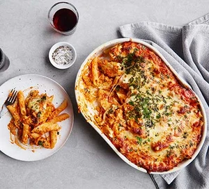

Chicken Pasta Bake

Description
A gooey cheese and chicken pasta bake for the ultimate weekday family dinner.
Ingredients
- Olive oil
- Onion
- Garlic cloves
- Chopped tomatoes tinned
- Mascarpone
- Caster sugar
- Chicken breasts
- Penne pasta
- Mature cheddar
- Mozzarella
Steps
- Heat 2tbsp of the olive oil in the pan over a medium heat and fry the onion gently for 10-12 mins. Add the garlic and cook for 1 min. Tip in the tomatoes and sugar and season to taste. Simmer uncovered for 20 mins or until thickened, then stir through the mascarpone.
- Heat 1 tbsp of the oil in a non stick frying pan. Season the chicken and fry for 5-7 mins or until the chicken is cooked through.
- Heat the oven to 200c fan. Cook the pasta according to the packet instructions. Drain and toss with the remaining oil. Tip the pasta into a medium sized overproof dish. Stir in the chicken and pour over the sauce. Top with the cheddar and mozzarella. Bake for 20 mins or until golden brown and bubbling.